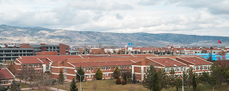
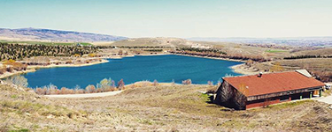
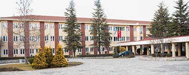

ESTÜ SASTEK KLÜBÜ KAMPÜS VİDEOSU
Üniversitemizin en büyük klüplerinden biri olan SASTEK'İN kampüs videosu daha önce üniversitemize gelmeyenler için rehber niteliğinde videosu
Merhabalar Arkadaşlar, Eskişehir Teknik Üniversitesi Savunma Sanayii ve Teknolojileri Kulübü (SASTEK) öncelikle size kulübümüz ile ilgili bilgi vermek istiyorum. Kulübümüz 2018-2019 Eğitim Öğretim yılı bahar döneminde kurulmuş olup odak noktası savunma sanayii ve bu alandaki gelişmelerdir. Öğrencileri teknik, sosyal ve kültürel anlamda gelişmelerine katkıda bulunmak, araştırmaya teşvik etmek, öğrencileri savunma sanayii ve savunma teknolojileri konularında bilinçlendirmek ve üniversite-sanayi işbirliğinin gelişimine katkı sağlamak amacıyla çalışmalar yürütmeyi kendilerine hedef edinmiştir. Sizler için okulumuzu detaylıca tanıtmaya çalıştık. Bu videodan sonra aklınızda bir soru kaldıysa hem okulumuzun sıkça sorulan sorulan kısmından hem de Savunma Sanayii ve Teknolojileri Kulübü (SASTEK) medya kanallarından ulaşabilirsiniz.
YERLEŞKELERİMİZ
İki Eylül Kampüsü
Eskişehir Teknik Üniversitesi 2 Eylül Kampüsü 39.814693 enlem ve 30.533587 boylamda yer almaktadır. Semt/Mah olarak Gazipaşa Mh. ve Tepebaşı ilçesine bağlıdır. Eskişehir Teknik Üniversitesi 2 Eylül Kampüsü posta kodu 26555, Rakımı 787 metredir.
Borabey Kampüsü
Borabey kampüsü 39.8791 enlem ve 30.4580 boylamda yer almaktadır. Semt/Mah olarak Kavacık-Patlaklı mevkii ve Tepebaşı ilçesinde yer almaktadır. Eskişehir Teknik Üniversitesi Borabey Kampüsü posta kodu 26563, Rakımı 923 metredir.
Porsuk Kampüsü
Eskişehir Teknik Üniversitesi Porsuk MYO 39.772461 enlem ve 30.490675 boylamda yer almaktadır. Semt/Mah olarak Osmangazi Mh. ve Odunpazarı ilçesine bağlıdır. Eskişehir Teknik Üniversitesi Porsuk MYO posta kodu 26140, Rakımı 796 metredir. Kampüs yerleşkesinde Ulaştırma MYO ve Ulaştırma Bilimleri Enstitüsü bulunmaktadır.
YERLEŞKEDE YAŞAM
BESLENME OLANAKLARI
Öğrencilerimizin sağlıklı ve kaliteli beslenmelerini sağlamak üzere Üniversitemiz 2 Eylül Yerleşkesinde ve Porsuk Yerleşkesinde yemek servisi yapılmaktadır. Ayrıca kantin, kafeterya, yemek salonları vb. sosyal tesisler de öğrencilerimize hizmet vermektedir.

KÜTÜPHANE
Güçlü elektronik kaynak koleksiyonu ile 130 000+ e-kitap ve 30 000+ basılı kitap koleksiyonu ile öğrenci ve akademisyenlere fiziksel olarak merkez kütüphanemiz ve okuma salonunda hizmet verilmektedir. Kütüphanedeki e-kaynaklara uzaktan erişim imkanı da sunulmaktadır.
ULAŞIM
Kampüslerimize kentin farklı noktalarından hareket eden otobüs ve dolmuşlarla ulaşım sağlanabilmektedir. Öğrenciler barınma ihtiyaçlarını kentin farklı notlarında bulunan KYK yurtları, özel yurtlar ve apartlar ile çözmektedir. Kampüs yakınında da bir adet KYK yurdu bulunmaktadır.

SPOR TESİSLERİ VE KAMPÜS REKREASYONU
Üniversitemiz uluslararası olimpiyat ve müsabakaların düzenlenebileceği kapasitede spor salonları, stadyumu ve nitelikli konferans salonlarında; panel, kongre ve sempozyumlara ev sahipliği yapmakta ve öğrencilere hem bilimsel hem de sosyal anlamda eşsiz bir kampüs atmosferi sunmaktadır.

SAĞLIK HİZMETLERİ
Üniversitemiz Eğitim Aile Sağlığı Merkezinden hem öğrencilerimiz hem de personelimiz faydalanabilmektedir. Merkezde şu an için iki poliklinik aktif olarak hizmet vermekte olup muayene ve reçete yazımı, enjeksiyon ve pansuman ve kan tetkikleri hizmeti verilmektedir

ÖĞRENCİ KULÜPLERİ
Üniversitemiz öğrenci kulüpleri bireysel yetenekleri geliştirmek, takım halinde çalışma becerisi kazanmak, öğrencilerimizin sosyal ve kültürel ihtiyaçlarını karşılamak amacıyla sizleri beklemektedir. Üniversitemiz öğrencilerimizin tercih ettiği kulüplere katılması ya da kendi kulübünü kurması konusunda öğrencilerimize destek olmaktadır.
Gazipaşa Mahallesi, Eskişehir Teknik Üniversitesi İki Eylül Kampüsü 26555, Tepebaşı/ESKİŞEHİR
+90 222 213 77 77
info@eskisehir.edu.tr
2024 © Tüm hakları saklıdır. Eskişehir Teknik Üniversitesi